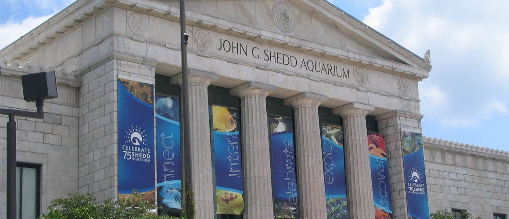
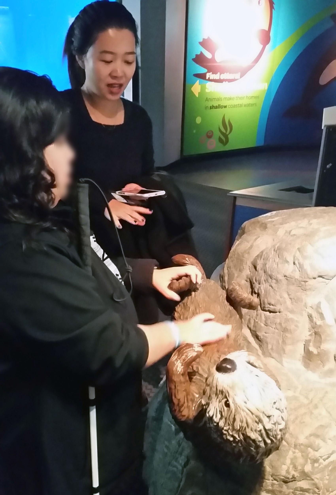
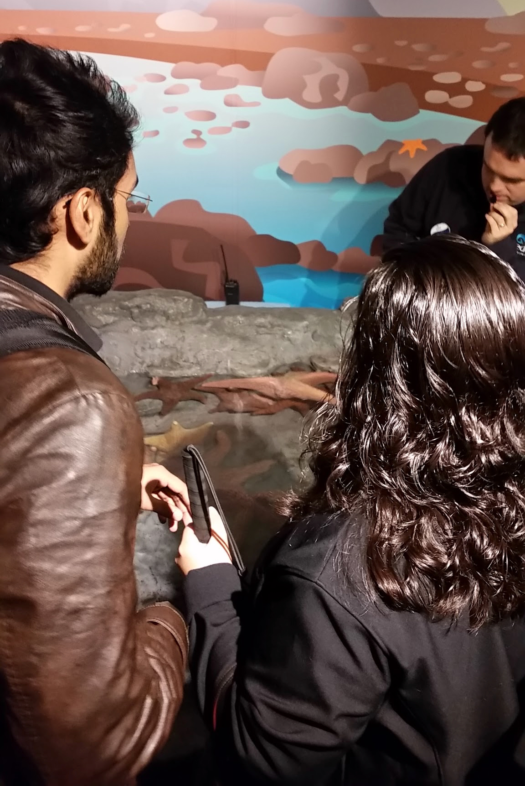
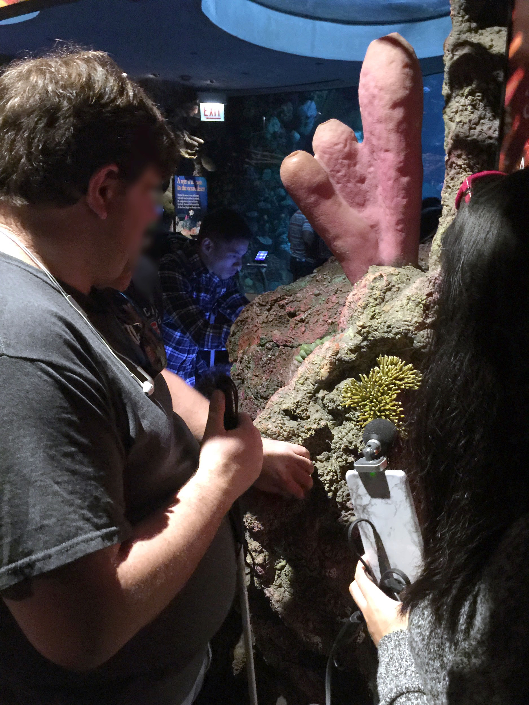
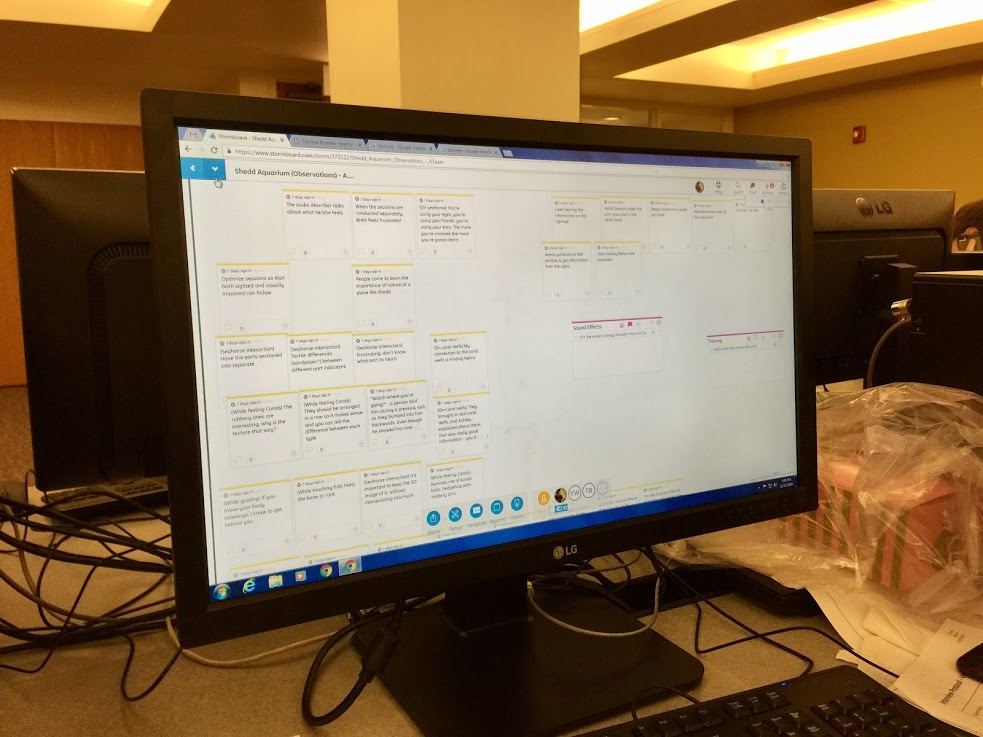

Shedd Aquarium
Accessibility Study

| Period: |
October 2016 - November 2016 |
| School: |
DePaul University |
| Role: |
User Researcher |
| Project Type: |
Accessibility Field Study |
Introduction
- Shedd Aquarium is an indoor public aquarium in Chicago, Illinois
- It was the most visited aquarium in the U.S. in 2005, and in 2007, it surpassed the Field Museum as the most popular cultural attraction in Chicago
Problem Summary
- Currently most museums do not design their exhibits to accommodate visitors with disabilities, particularly those with visual impairments
- I was part of a team that investigated this problem space, and provided recommendations for improvement to accessibility in Shedd Aquarium
Process
Contextual Inquiry

Tactile Exhibit (Seal)

Tactile Exhibit (Starfish)

Tactile Exhibit (Reef)
Deliverables

Affinity Diagram (Stormboard)
Tools and Technologies used:
Skype, Google Slides, Microsoft Word, Stormboard
Findings
Museum Staff
- Not knowledgeable of assistive technology
- Lack exposure to people with disabilities
Audio Descriptions
- Keep visitors engaged and are enjoyable
- Current audio description setup at Shedd Aquarium is effective
Exhibit Design
- Sounds create a sense of space
- Information signage is not accessible
- Tactile elements help learning and knowledge retention
Recommendations
Museum Staff
- Assistive Technology training
- Increased contact with people with disabilities
Audio Descriptions
- Domain training for audio describers
- Perform advanced research on the exhibit
- “General-to-specific” approach
- Less is more
Exhibit Design
- Provide multimodal sensory information
- Braille for brief and audio descriptions for longer text information
Get In Touch
Interested to get in touch regarding work opportunities? Feel free to connect with me on LinkedIn or Twitter, or contact me directly via the form below:

{kind=link}
{kind=link}
{kind=link}
{kind=link}